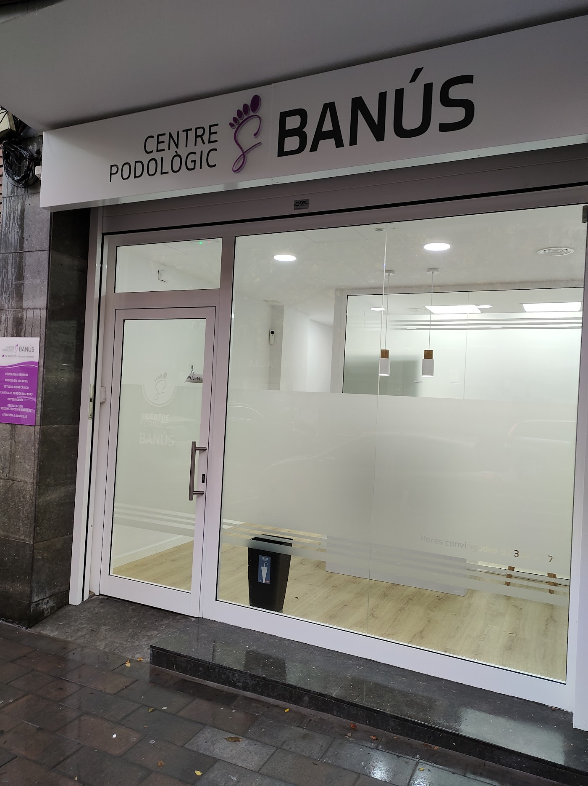

Pies sanos, pasos sin dolor.
Podología en la Avinguda dels Banús de Santa Coloma: uñas encarnadas, durezas, estudio de la pisada y plantillas, con el trato cercano de Susana y su equipo.
★★★★★ 4,7 en Google · 42 opinionesHorario

¿Qué te pasa en el pie?
Elige lo que notas y te explicamos cómo lo tratamos. Si te duele mucho, llámanos: muchas veces te podemos atender el mismo día.
Pide cita por teléfono933 86 05 79Llamar ahora
Lo que dicen del centro
4,742 opiniones en Google
«Trato cercano y profesionalidad máxima. Te dejan los pies maravillosos.»
Opinión en Google«Llevo prácticamente 10 años yendo allí, el trato es inmejorable.»
Opinión en Google«Me sacó un cristal de la planta del pie sin cita y desde entonces va toda mi familia.»
Opinión en GoogleVen al centro
DirecciónAvinguda dels Banús, 23 · 08923 Santa Coloma de Gramenet · Cómo llegar
Teléfono933 86 05 79
Horario